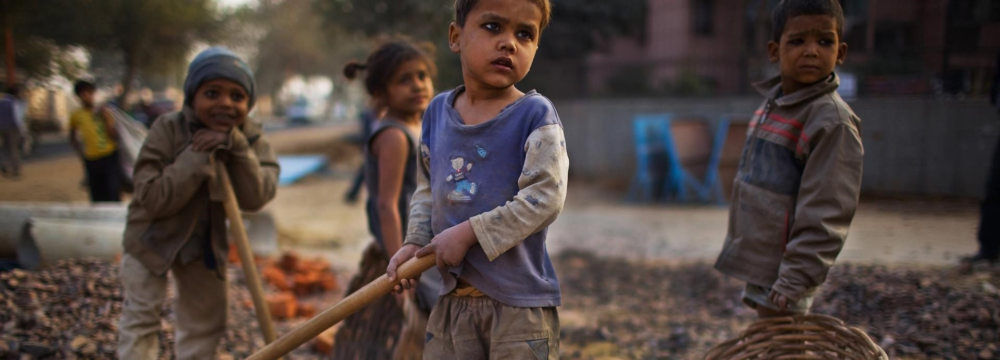

Agenda 2030
Sezione 1
Sezione 2
Sezione 3
Fonti

Il lavoro
al giorno d'oggi
"Come adulti non possiamo rubare ai bambini la capacità di sognare. Cerchiamo di favorire un contesto di speranza,
dove i loro sogni crescano e condividano. Un sogno condiviso apre la via a un nuovo modo di vivere." – Papa Francesco